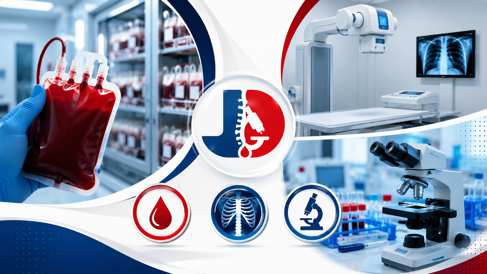
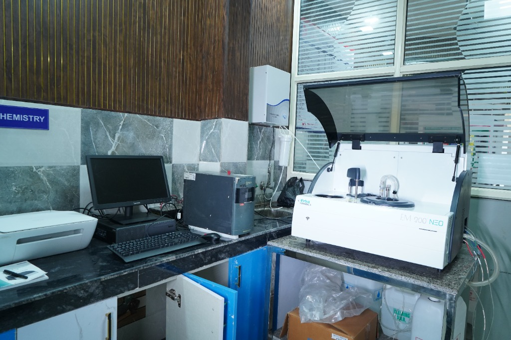
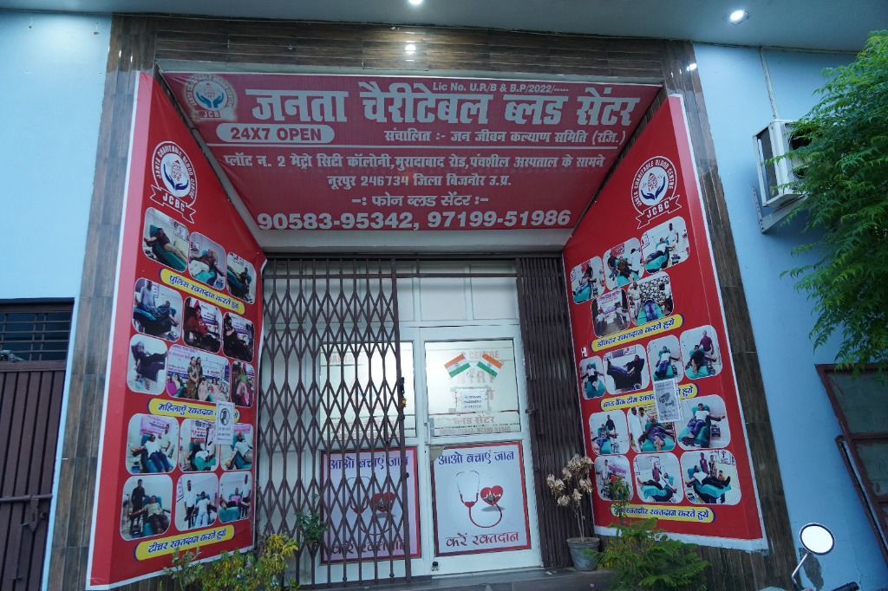

JANTA DIAGNOSTIC CENTRE & BLOOD BANK
Accurate. Reliable. Trusted.
Complete Diagnostic & Blood Bank Services Under One Roof
Why Choose Janta Diagnostic?
At Janta Diagnostic Centre & Blood Bank, our aim is to make essential diagnostic and blood bank services accessible to the community while maintaining high standards of quality and care. Our centre is supported by experienced doctors, laboratory professionals, radiology specialists and trained technical staff.
Comprehensive Services
From pathology and biochemistry to Digital X-Ray, ECG and blood bank services, we provide essential diagnostic facilities under one roof.
Quality & Reliability
We follow established quality practices and operate as an ISO 9001:2015 certified laboratory and X-Ray centre.
Affordable & Accessible
Our mission is to provide dependable diagnostic services at affordable prices, particularly for Noorpur and surrounding areas.
Inside Our Advanced Diagnostic Laboratory
High-precision testing infrastructure equipped with automated biochemistry & haematology systems, chemiluminescence (CLIA-181), and operated by qualified healthcare technologists.
About Janta Diagnostic
Your Health, Our Commitment
Established in 2014, Janta Diagnostic Centre was founded with the vision of providing accurate, dependable, and affordable diagnostic services to the community in Noorpur and Bijnor district. In 2022, recognizing the urgent need for accessible emergency transfusion support, Janta Charitable Blood Centre was established under Jan Jeevan Kalyan Samiti (Regd.).
Today, our state-of-the-art multi-storey diagnostic facility brings together advanced Pathology, Biochemistry, Digital X-Ray, ECG, and a 24/7 Blood Bank under one roof.
-
24/7 Safe Blood & Timely Support
Licensed blood bank (Lic. No. UP/B & B.P./2022) offering Whole Blood, PRBC, Platelets, and FFP with free blood support for thalassemia patients (subject to availability).
-
Advanced Automated Diagnostics
Equipped with the Erba EM 200 NEO automated biochemistry analyzer, multi-parameter haematology cell counters, and high-frequency Digital X-Ray reporting by Dr. Sunil Agarwal (MBBS, MD Radiology).
-
Hygienic Environment & Home Collection
Sanitized sample collection rooms, certified laboratory technologists, and convenient doorstep blood sample collection across Noorpur and nearby areas.
Our Services
Comprehensive diagnostic and blood bank solutions designed to provide accurate results with safety, reliability, and speed.
Blood Bank
Safe, timely and accessible blood services. Available components: Whole Blood, PRBC, Platelets, and Plasma. We offer free blood support for thalassemia patients.
Pathology
Comprehensive lab investigations covering Hematology, Biochemistry, Microbiology, Serology, and Clinical Pathology to support accurate clinical diagnosis.
Digital X-Ray
Modern digital radiology services with expert diagnostic reports by Dr. Sunil Agarwal (MBBS, MD). Online X-Ray reporting is fully available.
ECG
Precise electrocardiogram assessments for routine cardiac check-ups, diagnostic monitoring, and physiological screening support.
Home Sample Collection
Enjoy maximum convenience with secure blood sample collection from your home by our trained technical staff. Contact us to schedule.
ISO 9001:2015 Quality
Janta Diagnostic operates as an ISO 9001:2015 certified laboratory and Digital X-Ray centre (Registration No.: BJR PDCO88) ensuring quality healthcare.
Book a Test / Request Appointment
Getting the right diagnostic test should be simple. Fill in your details and our team will contact you regarding your test, appointment or home sample collection.
Prefer WhatsApp?
Talk to our team directlyOur Departments
Specialized diagnostic and imaging departments designed to deliver accurate insights across all major healthcare categories.
Haematology
Laboratory investigations related to blood and blood-forming systems.
Our hematology department is equipped with multi-parameter automated cell counters and digital testing workstations. We perform Complete Blood Count (CBC), hemoglobin assessment, blood grouping, ESR, peripheral blood smears, and screening for anemia, clotting disorders, and infections with high clinical accuracy.

Biochemistry
Biochemical investigations powered by fully automated analyzers.
Powered by the Erba EM 200 NEO fully automated clinical chemistry analyzer. We provide comprehensive metabolic panels including Liver Function Tests (LFT), Kidney Function Tests (KFT), Lipid Profile, Blood Glucose, HbA1c, Electrolytes, and enzyme assays with rapid turnaround and precision quality control.

Microbiology
Laboratory testing related to infectious diseases and microorganisms.
Specialized tests to identify bacterial, viral, fungal, and parasitic infections through advanced culture, smear examinations, and sensitivity analysis.

Serology & Immunoassay
Diagnostic investigations involving antibodies and immune responses.
Our dedicated serology and immunoassay station performs rapid and automated testing for Dengue (NS1, IgM/IgG), Typhoid (Widal), Rheumatoid Factor (RA), HIV, HBsAg, HCV, Thyroid profile, and specialized immunological markers.
Clinical Pathology
Routine clinical laboratory investigations for diagnosis and monitoring.
Covers routine analysis of urine, stool, semen, and other body fluids. These investigations support early detection of systemic infections, renal function issues, and digestive health status.
Digital X-Ray
Digital radiology services with online X-Ray reporting.
Supported by qualified radiology expertise under Dr. Sunil Agarwal (MBBS, MD Radiology). We use modern digital imaging systems to deliver precise results, with same-day online reporting available.

Blood Bank
Blood and blood component services with a focus on safe, timely and accessible support (24x7).
Established in 2022 under Jan Jeevan Kalyan Samiti (Regd.), Janta Charitable Blood Centre provides 24x7 Whole Blood, Packed Red Blood Cells (PRBC), Platelets, and Fresh Frozen Plasma (FFP). We are proud to provide free blood support for thalassemia patients, subject to requirements and availability.

Our Expert Team
Experienced healthcare professionals providing precise diagnostics, clinical excellence, and compassionate care.

Dr. Yogesh Kumar
DirectorAssociated expert with deep diagnostic laboratory experience from GB Pant Hospital (Delhi), TMU Hospital (Moradabad), and Dehradun labs.

Dr. Sarandeep Singh
MBBS, MD (Pathology) • Senior PathologistProvides medical expertise, clinical oversight, and diagnostic guidance for pathology and laboratory services at Janta Diagnostic.

Dr. Sunil Agarwal
MBBS, MD (Radiology) • Radiology SpecialistDiagnostic imaging specialist overseeing our Digital X-Ray department, delivering precise reporting and online diagnostic analysis.

Supervisory & Technical Team
Mohammad Shadan (Tech Supervisor) & Rahul Kumar (Blood Bank Supervisor)Leading the laboratory operations and blood bank transfusion services with certified technologists and 24/7 emergency response staff including Gaurav Kumar (X-Ray Tech), Vishal Kumar (Lab In-charge), and Rohit Sharma (Lab Tech).
Community Initiatives
Health Camps & Blood Donation Awareness
At Janta Diagnostic Centre & Blood Bank, we actively organize local diagnostic health camps and voluntary blood donation awareness drives across Noorpur and Bijnor district to support patient survival and promote preventive wellness.
Thalassemia Support
Free blood support for thalassemia patients (subject to availability).
Voluntary Donor Drives
Active camps with police, educators, doctors, and youth volunteers.
Frequently Asked Questions
Find answers to common questions about our diagnostic services, blood bank components, and booking procedures.
What services does Janta Diagnostic Centre offer?
We provide a comprehensive range of diagnostic services including Pathology (Haematology, Biochemistry, Microbiology, Serology, Clinical Pathology), Digital X-Ray, and ECG assessments.
Where is Janta Diagnostic Centre & Blood Bank located?
Our facility is located opposite Khalsa Inter College, Gandhi Nagar, Noorpur, District Bijnor, Uttar Pradesh.
What blood components are available at Janta Blood Bank?
Established in 2022, Janta Blood Bank provides Whole Blood, Packed Red Blood Cells (PRBC), Platelets, and Fresh Frozen Plasma (FFP).
Do you provide free blood support for thalassemia patients?
Yes, we are deeply committed to supporting the community by providing free blood support for thalassemia patients, subject to applicable guidelines and availability.
How can I book a test or request home sample collection?
You can request an appointment or home sample collection by filling out our online booking form, calling +91 8126189415, +91 9719951986, or clicking the WhatsApp chat button to message our team directly.
What are the opening hours of Janta Diagnostic & Blood Bank?
Our Diagnostic Centre is open for sample collection and testing from 8:00 AM to 8:00 PM daily. Our Blood Bank services operate 24 hours a day, 7 days a week (24/7) for emergency blood support.
Is Janta Diagnostic Centre certified?
Yes. Janta Diagnostic Centre operates as an ISO 9001:2015 certified clinical laboratory and Digital X-Ray centre (Registration No.: BJR PDCO88), ensuring high quality standards.
When was Janta Diagnostic Centre & Blood Bank established?
Janta Diagnostic Centre was established in 2014. The Janta Blood Bank was added in 2022 to provide blood storage, components, and transfusion support under one roof.
What Our Patients & Doctors Say
Dedicated to delivering precision healthcare and life-saving blood support. Read experiences from patients, consulting doctors, and families across Noorpur and Bijnor district.

Dr. K. P. Verma
Senior Consulting Physician • Bijnor
We regularly refer patients to Janta Diagnostic for digital X-Ray and biochemistry investigations. Their automated Erba analyzer provides fast, highly dependable clinical values, and their reporting turnaround is exemplary.

Mohammad Imran
Community Social Worker
Their voluntary blood donation camps and dedicated free blood support for thalassemia patients demonstrate genuine community dedication. The staff is warm, professional, and well-trained.

Vikas Chaudhary
Local Business Owner
State-of-the-art facility in Noorpur! Having comprehensive pathology, biochemistry analyzers, digital X-Ray, and emergency blood bank under one single roof saves critical time and travel expenses.
Our Facility & Technology Gallery
Take a virtual tour of our modern diagnostic infrastructure, automated biochemistry & haematology equipment, 24/7 blood centre, and healthcare team in Noorpur.


Contact Us
Find our location, check our operating hours, or drop us a message to request information or book a service.
Diagnostic Centre
Opposite Khalsa Inter College, Gandhi Nagar, Noorpur, District Bijnor, UP
Charitable Blood Centre
Plot No. 2, Metro City Colony, Moradabad Road, Opp. Panchsheel Hospital, Noorpur 246734 (Bijnor)
Call & Helplines
Diagnostic: +91 8126189415, 9719951986
Blood Bank (24/7): +91
90583-95342
Email Us
jantadiagnosticscentre@gmail.com
Opening Hours
Diagnostic Centre: 8:00 AM – 8:00 PM
Blood Bank: 24/7 (Always
Open)